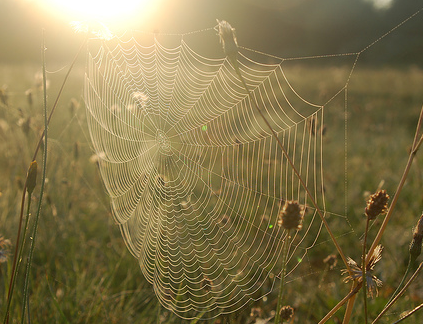

Cella Serghi
"Poate părea o formă de narcisism, dar eu mi-aș fi dorit să fiu și să scriu ca Anaïs Nin, să am educația și posibilitățile ei… Iar dacă viața nu m-a facut să fiu ca ea, ei bine, modelul meu în viață sunt eu…"
Cella Serghi a fost o scriitoare,publicistă și traducătoare română, una dintre cele mai importante prozatoare ale literaturii interbelice. A debutat cu romanul "Pânza de păianjen", fiind susținută de scriitori faimoși ai epocii precum Liviu Rebreanu, Mihail Sebastian și Camil Petrescu. În anul 1977 a publicat volumul autobiografic intitulat "Pe firul de păianjen al memoriei"
Născută la 22 octombrie 1907 în Constanța, într-o familie de vechi dobrogeni, Cella Marcoff, cunoscută sub pseudonimul Cella Serghi, va rămâne atașată toată viața de farmecul ținutului natal, așa cum de altfel mărturisește: "M-am născut în Constanța, într-o casă de pe strada Mării, și prezența mării a avut o influență deosebit de puternică asupra copilăriei mele. Despărțirea de mare, din cauza refugiului, a fost un șoc care a lasat urme adânci. M-a urmărit nostalgia mării, dorul de mare mi-a îndurerat copilăria."
"Oamenii sunt chinuiți de neliniști, de îndoieli, de întrebări fără răspuns. Pentru oricine realitatea poate fi și altfel, adevărul poate fi altul. Toate aceste îndoieli sunt ca microbii din organism, care pot lupta cu cei care îl atacă din afară."
Așa cum Cella Serghi afirma că și-ar fi dorit să fie ca Anais Nin, eu mi-aș fi dorit să fiu Cella Serghi, sau măcar, să dau dovadă de același curaj și nestăvilire de care ea, și personajul ei, dau dovadă. Povestea Dianei este redată prin intermediul caietelor sale, citite de Ilinca Dima, și printr-un șir de scrisori între cele două prietene. Diana își povestește întreaga viață, un amestec de iubire, căutare zadarnică și resemnare, când abia are 20 de ani. O remarcă interesantă este făcută de prietena sa, Ilinca Dima, care spune: cât de tânără este și cât de mult a trăit deja.